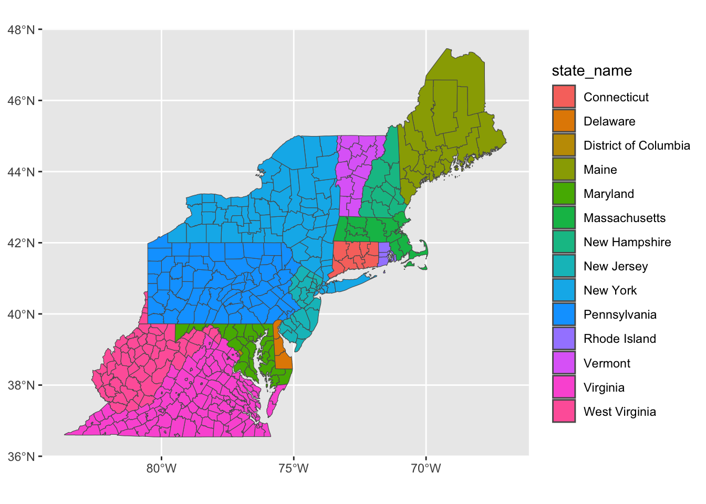
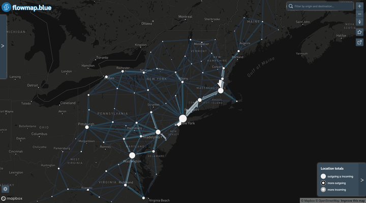

library(tidyverse)
library(tidycensus)
library(janitor)
library(lehdr)
library(tigris)
library(sf)
library(ggraph)
library(tidygraph)
library(googlesheets4)
library(googledrive)
options(tigris_use_cache = TRUE,
scipen = 999,
digits = 4)This map shows the commuter patterns in the Northeast Megalopolis/Acela Corridor/BosWash metro area. I pulled the data from the Census Longitudinal Employer-Household Dynamics (LODES) system via the {lehdr} package. The map was created through the Flowmap.blue tool, which makes interactive maps of movement between areas. Flowmap.blue also exposes a bunch of cool features, like animating and clustering connections, among others.
You can view a full version of the map here.
Code
This code is what I used to query the LODES data and aggregate it. First, load the required libraries.
This code gets the main and aux LODES data for each state that I name in the states object. I then combine the data into lodes_combined and check that there are no duplicate origin-destination pairs. Be warned that these files are large (100-500MB each), and can take a bit to read into R, depending on your machine.
#get lodes
states <- c("pa", "wv", "va", "dc", "de",
"md", "ny", "ri", "ct", "ma", "vt", "nh", "me")
lodes_od_main <- grab_lodes(state = states, year = 2017,
lodes_type = "od", job_type = "JT00",
segment = "S000", state_part = "main",
agg_geo = "county",
use_cache = TRUE) %>%
select(state, w_county, h_county, S000, year) %>%
rename(commuters = S000)
lodes_od_aux <- grab_lodes(state = states, year = 2017,
lodes_type = "od", job_type = "JT00",
segment = "S000", state_part = "aux",
agg_geo = "county",
use_cache = TRUE) %>%
select(state, w_county, h_county, S000, year) %>%
rename(commuters = S000)
lodes_combined <- bind_rows(lodes_od_main, lodes_od_aux)This code pulls the geometry for the states from the TIGER shapefile API:
counties_combined <- tigris::counties(state = c("PA", "NY", "NJ", "MD",
"WV", "DE", "VA",
"DC", "MA", "CT", "VT",
"RI", "NH", "ME"),
cb = TRUE) %>%
arrange(STATEFP) %>%
left_join(fips_codes %>% distinct(state_code, state_name), by = c("STATEFP" = "state_code"))
counties_combined %>%
ggplot() +
geom_sf(aes(fill = state_name))
The next step is to calculate the centroid of each county that will be used in the final map.
node_pos <- counties_combined %>%
mutate(centroid = map(geometry, st_centroid),
x = map_dbl(centroid, 1),
y = map_dbl(centroid, 2)) %>%
select(GEOID, NAME, x, y) %>%
arrange(GEOID) %>%
st_drop_geometry() %>%
as_tibble() %>%
select(-NAME) %>%
rename(lon = x,
lat = y) %>%
mutate(id = row_number()) %>%
select(id, GEOID, lat, lon)Then I add the county and state name to the node positions so the name is intelligible.
node_pos <- node_pos %>%
left_join(st_drop_geometry(counties_combined), by = c("GEOID" = "GEOID")) %>%
mutate(county_name = str_c(NAME, "County", sep = " "),
name = str_c(county_name, state_name, sep = ", "))
node_pos <- node_pos %>%
select(id, name, lat, lon, GEOID)
node_posRows: 433
Columns: 5
$ id <dbl> 1, 2, 3, 4, 5, 6, 7, 8, 9, 10, 11, 12, 13, 14, 15, 16, 17, 18, 1…
$ name <chr> "Fairfield County, Connecticut", "Hartford County, Connecticut",…
$ lat <dbl> 41.27, 41.81, 41.79, 41.46, 41.41, 41.49, 41.86, 41.83, 39.09, 3…
$ lon <dbl> -73.39, -72.73, -73.25, -72.54, -72.93, -72.10, -72.34, -71.99, …
$ GEOID <chr> "09001", "09003", "09005", "09007", "09009", "09011", "09013", "…This processes the LODES origin-destination data and creates the node-edge network graph object that will be fed into the Flowmap.blue service.
network_graph <- lodes_combined %>%
semi_join(counties_combined, by = c("w_county" = "GEOID")) %>%
semi_join(counties_combined, by = c("h_county" = "GEOID")) %>%
select(h_county, w_county, commuters) %>%
as_tbl_graph(directed = TRUE) %>%
activate(edges) %>%
filter(commuters >= 500,
#!edge_is_loop()
) %>%
activate(nodes) %>%
arrange(name)nodes <- network_graph %>%
activate(nodes) %>%
as_tibble()
glimpse(nodes)Rows: 433
Columns: 1
$ name <chr> "09001", "09003", "09005", "09007", "09009", "09011", "09013", "0…edges <- network_graph %>%
activate(edges) %>%
as_tibble() %>%
rename(origin = from,
dest = to,
count = commuters) %>%
arrange(desc(count))
glimpse(edges)Rows: 3,309
Columns: 3
$ origin <dbl> 128, 161, 121, 149, 61, 121, 138, 210, 112, 2, 127, 125, 138, 1…
$ dest <dbl> 128, 161, 128, 149, 61, 121, 128, 210, 112, 2, 127, 125, 138, 1…
$ count <dbl> 558308, 483764, 475073, 468885, 450975, 398535, 384941, 371075,…Finally, this code checks that the node position data matches up with the nodes from the network object. If these checks fail, the origin-destination pairs will be mapped to the wrong geographic coordinates.
#check that nodes match up
all(node_pos$GEOID == nodes$name)[1] TRUEidentical(node_pos$GEOID, nodes$name)[1] TRUElength(node_pos$GEOID) == length(nodes$name)[1] TRUEThis code creates the metadata that Flowmap.blue requires and loads the data into Google Sheets.
my_properties <- c(
"title"="BosWash regional US commuter flow",
"description"="Miniumum 500 commuters per origin-destination pair",
"source.name"="2017 US Census LODES",
"source.url"="https://lehd.ces.census.gov/data/",
"createdBy.name"="Conor Tompkins",
"createdBy.url"="https://ctompkins.netlify.app/",
"mapbox.mapStyle"=NA,
"flows.sheets" = "flows",
"colors.scheme"="interpolateViridis",
"colors.darkMode"="yes",
"animate.flows"="no",
"clustering"="yes"
)
properties <- tibble(property=names(my_properties)) %>%
mutate(value=my_properties[property])
gs4_auth()
googledrive::drive_auth()
drive_trash("lodes_flowmapblue")
ss <- gs4_create("lodes_flowmapblue", sheets = list(properties = properties,
locations = node_pos,
flows = edges))The final step is to allow the Google Sheet to be read by anyone with the link, and copy the Sheet’s link to Flowmap.blue

References
- https://doodles.mountainmath.ca/blog/2020/01/06/flow-maps/
- https://jamgreen.github.io/lehdr/articles/getting_started.html